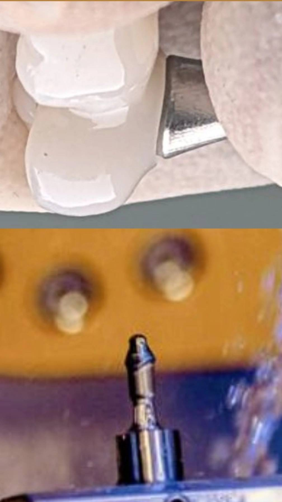

🟦 Insight 30 — بررسی محل اسپرو در اباتمنتهای Premill هنگام عدم نشست کامل روکش ایمپلنتی

📝 توضیح بالینی
در اباتمنتهای Premill که با سیستمهای CAD/CAM ساخته میشوند، برای میلینگ قطعه معمولاً دو روش اتصال به دستگاه وجود دارد.
-
روش اول Reverse Jig است. در این روش اباتمنت از قسمت کانکشن به یک نگهدارنده مخصوص وصل میشود و بدون هیچ اتصال اضافی میل میشود. به همین دلیل بعد از میلینگ چیزی برای جدا کردن یا اصلاح کردن باقی نمیماند.
-
روش دوم که رایجتر است، روش معمولی با Sprue است. در این حالت هنگام ساخت اباتمنت، یک اتصال کوچک به نام اسپرو (Sprue) بین اباتمنت و قطعه نگهدارنده ایجاد میشود تا در زمان میلینگ قطعه در جای خود ثابت بماند. بعد از اینکه میلینگ تمام شد، این اتصال باید بریده شود و محل آن کاملاً صاف شود.
-
نکته مهم این است که اگر محل اتصال اسپرو کاملاً صاف و تمیز نشود، حتی یک برجستگی بسیار کوچک میتواند مانع نشست کامل روکش روی اباتمنت شود.
-
در یکی از موارد کلینیکی با روکش ایمپلنتی مواجه شدم که روی اباتمنت به طور کامل نمینشست و در ناحیه مارژین گپ دیده میشد. پس از بررسی مشخص شد که محل اتصال اسپرو در اباتمنت به طور کامل صاف نشده و مقدار بسیار کمی از آن باقی مانده بود. همین برجستگی کوچک باعث شده بود روکش نتواند به طور کامل روی اباتمنت بنشیند.
-
بنابراین در مواردی که روکش ایمپلنتی روی اباتمنت Premill به خوبی نمینشیند؛ علاوه بر بررسی طراحی و فضای داخلی روکش، یکی از مواردی که بهتر است بررسی شود صاف بودن محل اتصال اسپرو در اباتمنت است.
✍️ دکتر فواد شهابیان
متخصص پروتزهای دندانی و ایمپلنت